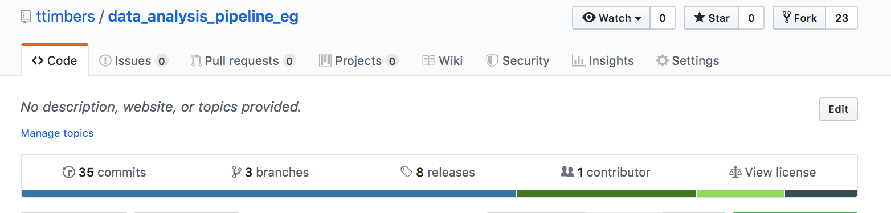
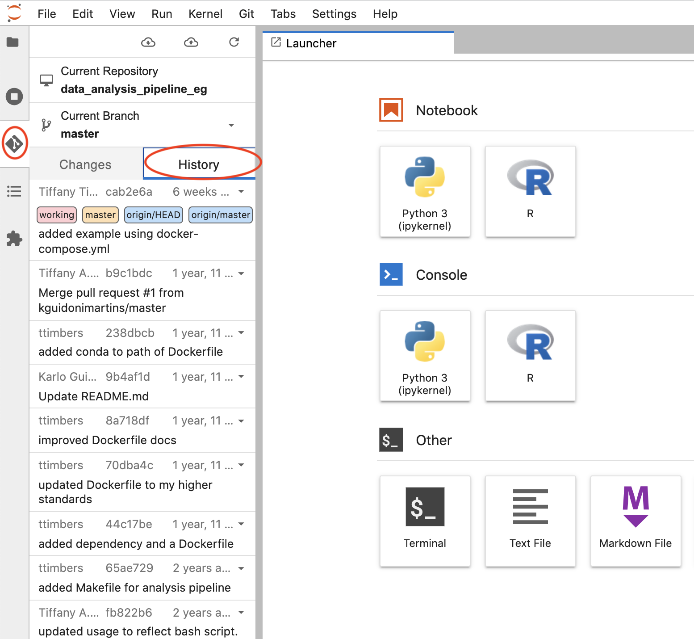
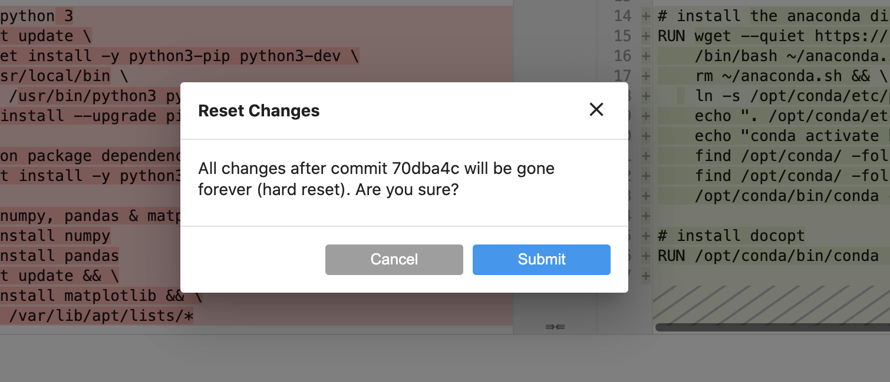

Version control for transparency and collaboration
Contents
Version control for transparency and collaboration¶
Topic learning objectives¶
By the end of this topic, students should be able to:
Explain why and how data analysis projects benefit from both local and remote version control
Use Git’s basic functions to save changes to local and remote version control, as well as view and restore older versions of files
Use Git and GitHub to successfully collaborate with others (e.g., handle merge conflicts, use a fork-pull-request and branch-pull-request workflow to contribute to a project, organize tasks through issue milestones and project boards)
Version control¶
“Version control is the process of keeping a record of changes to documents, including when the changes were made and who made them, throughout the history of their development. It also provides the means both to view earlier versions of the project and to revert changes.”
In this course we will learn to use the most popular version control software tools, Git and GitHub. A schematic of local and remote version control repositories using these tools is shown below:

Source: Data Science: A First Introduction
A Zoom poll!¶
Before this class, you were asked to read Chapter 12: Collaboration with version control from Data Science: A First Introduction. We’re goig to do a Zoom poll with the following questions to check your knowledge!
1. Which of these is untrue about the Git and GitHub version control software?
a. Allows you to view and/or retrieve older snapshots of the files and directories in a project.
b. Automatically snapshots your work every 2 minutes.
c. Provides transparency on who made what changes to files and directories in a document.
d. Can act as a way to back-up your work.
2. GitHub is the software you use locally on your computer (i.e., your laptop) to commit changes to the version control history. True or False?
a. True
b. False
c. Neither true or false.
3. You changed two files (notes.txt and eda.ipynb) but you only want to commit changes to one of them (eda.ipynb) to the version control history. Which Git command allows you to specify this?
a. Add
b. Commit
c. Push
d. Push
4. At a minimum, how often should you push your work to GitHub?
a. Every 5 min.
b. Every 30 min.
c. At the end of every work session.
d. Once a week.
5. You try to push your most recent commit from your locale version control repository to your remote repository on GitHub and it fails because Git says the remote contains work that you have locally. What do should you do next?
a. Commit the changes you made recently in your working directory.
b. Force push your changes.
c. Pull the changes from the remote repository that you do not have locally.
6. You pull changes that exist in your remote version control repository on GitHub that you do not have in your local version control repository, and you get the message Auto-merging in <FILENAME> CONFLICT (content): Merge conflict in <FILENAME> Automatic merge failed; fix conflicts and then commit the result. What do you need to do?
a. Push the changes from the local repository that you do not have remotely.
b. Force pull the changes.
c. Manually open the file with the conflict and edit it to have the desired version of the changes, as well as remove the special Git syntax used to identify the merge conflict.
Common Git commands at the command line¶
In the assigned textbook reading we use the JupyterLab Git extension tool to run Git version control commands (adding to the staging area, committing, pushing, pulling). However, sometimes we may need to resort to using the Git commands at the command line (i.e., terminal) if we end up in situations the JupyterLab Git extension tool is not designed to handle (or we hit a bug in that software). Thus, below we list the most common Git commands that you would need at the command line:
Description |
Command |
|---|---|
Clone a remote version control repository from GitHub.com to your local computer |
|
Checking the status of the local version control repository |
|
Adding a file to the staging area |
|
Committing staged file to the version control history |
|
Push changes to the local version control repository to the remote repository on GitHub.com |
|
Pull changes from the remote version control repository on GitHub.com to the local repository |
|
Viewing the version control history |
|
Hands on practice with merge conflicts!¶
One of the major blockers getting used to using version control is dealing with merge conflicts! 😱
Git can automatically handle merging two versions of a file if each collaborator changes different lines, however when two collaborators change the same line, Git throws up its hands and says, I cannot handle this responsbility, I need help from a human!

When this happens, your human task is to find the merge conflict markers, remove them, and settle on which version of the line(s) where the conflict occurred should remain.
Merge conflict markers:¶
the beginning of the merge conflict is preceded by
<<<<<<< HEADthe end of the merge conflict is marked by
>>>>>>>between the markings mentioned above, Git also inserts a separator (
=======). The version of the change before the separator is your > change, and the version that follows the separator was the change that existed on GitHub.
Resolving merge conflicts in a simple text file:¶
Steps:
Click the green “Use this template” button from this GitHub repository to obtain a copy of it for yourself (do not fork it).
Clone this repository to your computer.
Create a remote branch named
make-conflict(this will use GitHub Actions to create a commit in your remote repository).Fix the second line in
cube.rso that it calculates the cube, not the square (e.g., changex^2tox^3). Commit your changes to version control via Git and push your changes to GitHub.Resolve the merge conflict them so that you can see your changes on GitHub.
Resolving merge conflicts in a more complex text file:¶
Steps:
Click the green “Use this template” button from this GitHub repository to obtain a copy of it for yourself (do not fork it).
Clone this repository to your computer.
Create a remote branch named
make-conflict(this will use GitHub Actions to create a commit in your remote repository).Fix the second line in the code cell in
cube.ipynbso that it calculates the cube, not the square (e.g., changex^2tox^3). Commit your changes to version control via Git and push your changes to GitHub.Resolve the merge conflict them so that you can see your changes on GitHub.
We are going to now generate and resolve merge conflicts.I have set-up a template GitHub repository for you so that you can easily generate a merge conflict to resolve. We will do this twice, once with a simple plain text file (e.g., an R script) and once with a more complex text file (e.g., a Jupyter notebook).
Going back in time!¶
Just going for a look:¶
The easiest way to go back in time in your version control repository is to use the GitHub.com website. To do this, we click the commits link:
{kind=link}
Then we can view the history, along with the commit messages. To view the state of a repository at that time, we click on the “<>” button:

Travelling in time or bringing something something from the back from the past:¶
Sometimes you want to be able to explore and run the files from the past, or bring a past version of a file to the future. When we need to do either of those things, we should be working with Git in our local repository.
Here’s the same history as viewed above, but using the JupyterLab Git extension:
{kind=link}
To see what was changed at a given point in history, click the down arrow associated with the commit. You can then diff the file (see what was changed for a particular file by clicking the file icon beside it.

Travelling in time to the past¶
If you wanted to move your project’s file and directories (so entire state) back to this point in time you can do that by clicking the clock icon. NOTE: If you do this, be sure you pushed your changes, as it will discard anything more recent than this commit on your local computer (i.e., this is a hard reset).

Again, because this is a hard reset, Git will warn you about the consequences:
{kind=link}
Once, you have done this, you will see the more recent commits in your history are GONE!

Exercise:¶
Clone this GitHub repository to your computer.
View the names of the files that were changed in commit
44c17be, and the specific changes made to the filedoc/count_report.Rmd.Do a hard reset to the state of the repository as it was in commit
44c17be.Then pull the Git remote repository to go back to where you started.
Question - could you have gone back to where you started if the work was not stored in the remote repository?
Bringing something something from the back from the past¶
There is not a nice and easy way (that I am aware of) of cherry-picking a version of single file from the past using the JupyterLab Git extension. To do this, I resort to the Git command line tool in the terminal. The general command is:
git checkout <HASH> <FILE>
For example, to checkout the version of the doc/count_report.Rmd from the commit whose hash starts with 5837143, we would type:
git checkout 5837143 doc/count_report.Rmd
That will bring that version of the doc/count_report.Rmd into our working directory. We can view it, run it or use it, et cetera. If we want to keep that version going forward for our project, we would have to then add and commit that version of the file to do so.
What Git tool to use?¶
There are many many many different tools for using Git. We have so far discussed two in this class (the JupyterLab Git extension, and the Git command line). Others include GitHub Desktop, GitKraken, Source Tree, RStudio’s Git GUI, and VSCode’s Git GUI. Which one should you use? Anyone that fits you best! I recommend experimenting with a few and then settling in with the one that you find easiest to use. One note is that some commands are limited in some tools (e.g., the example above with the JupyterLab Git extension). If you hit that case in your favorite tool, you can use the Git command line tool to get around it and then go back to primarily using your tool of choice.
Git ignore¶
What about pesky files that exist on our computer, that change sometimes but we don’t really actively use (e.g., .DS_Store, .ipynb_checkpoints, etc). We can tell Git to ignore such irrelevant files by creating and using a .gitignore file
Create a .gitignore file¶
Using the plain text editor of your choice, create a file called .gitignore inside the root of your Git repository.
Inside the text file, list the files and folders you would like to ignore, one per line. For example:
.ipynb_checkpoints/
.DS_Store
Save the file, and add and commit it with Git. Next time you go to use version control, Git will not bother you about the files you listed there, even if they have changed!
.gitignore tips and tricks¶
append
**/to the beginning of any file/folder names listed in the.gitignorefile to have them ignored in subdirectories within the repo as wellcreate a global
.gitignorefile so that you do not have to create the same.gitignorefor all your homework repos
Git Branches¶
Branches allow you to have a playground for developing and testing new additions to your code, as well as fixes. This playground lets your explore, experiment and test in a safe place - away from others that might be using or depending on the current version of your code. This is perhaps more obviously useful if your project is deployed and has users (e.g., a data visualization dashboard, an R or Python package, a phone app, etc), but this can also be useful for code that make up a data analyses. As, in addition to the reasons stated above for branching, branching also lets you organize units of work into smaller, more manageable chunks that are easier for collaborators to check over and review.
Once the new code additions or fixes have been finalized in their branch playground, they can be merged back to the main code-base. Several branch playgrounds can co-exist, one for each new code addition or fix being worked on. This allows for parallelization of work!
We can use a construction of a house as a metaphor for this kind of development. First, you need to build the foundation. Since everything depends on the foundation being built, this would be developed on the main branch. When the foundation is finished, the construction of other parts of the house that don’t depend on each other could take place in parallel, e.g. some contributors might start working on the walls and others on the floor. When either of these features is finished, it can be added back to the house (merged into main). When depicted graphically, this process would look something like this (each dot is a commit).

A more realistic Git branching example for a data analysis project might look something like this:

Creating a branch¶
Using the JupyterLab Git extension, you create a new branch on your local computer by clicking on the up arrow in the “Current Branch” tab, and clicking the blue “New Branch” button.

A dialogue box will open, and ask you to name the branch. After you do this, click on the blue “Create Branch” button. Remember to name it after the work you plan to do. Here we plan to fix the documentation a bit, so we will call it patch-docs.
{kind=link}
To finally switch to the new playground (i.e., your new branch) click on the branch name of the new branch you just created in the Branches section of the “Current Branch” tab.

As you work here, you can commit your changes to version control locally, and even push your changes to the remote repository. All the changes however will live only on that branch until you do something to move them to another branch. When you want to start discussing your changes with your collaborators to start the process of bringing these changes into the main branch (main code-base) you typically create what is called a pull request. A pull request is a like an asking your collaborators “is it OK to merge my code?” Usually there will be some discussion and a few more revisions to the code, but eventually they will give you the thumbs up when everything looks good and the code can then be merged. We will discuss this more next.
Exercise¶
Make your own copy of this GitHub repository by clicking the green “Use this template” button. And then clone your copy of the repository to your computer.
Create a new branch named
better_error_msgin the local repository using the JupyterLab Git extension.On that branch, fix the
sqrt.pyso that if you run this script with a negative number as an argument you do not get an difficult to understand error, but instead throw a helpful exception informing the user that the number should be positive. Fix to add tosqrt.py:
if number < 0:
raise Exception("n should not a positive number")
Switch back to the
mainbranch and look at theREADME.mdfile - do you see the change there?Switch back to the
better_error_msgbranch - do you see the change there?Push your change to the remote GitHub repository, and see where you can find it there!
Creating a pull request¶
To create a pull request, go to the remote GitHub repository, and usually GitHub will should show you a yellow banner listing any recently pushed branches.

To create a pull request, you click the green button “Compare & pull request”. In the new page, add a message to describe the changes you have made, scroll down to review the changed files, and the click the green button that reads “Create pull request”. If you are working together in a team, you could also designate certain team members to review your work and assign relevant labels, via the right hand side panel.
The next step is for a collaborator to review your work and merge it in if they approve it.
Exercise¶
Use the green “Compare & pull request” button on the yellow banner to open a pull request.
Go to the “Pull requests” tab on the remote GitHub repository and explore the “Conversation” and “Files changed” sub-tabs there.
Code reviews using in-line comments and suggested code fixes¶
In the project, you are expected to read and review eachother’s code BEFORE accepting a pull request.
Do not expect all (or even most) pull requests to be perfect in their first submission.
We very often need to have a conversation to get pull requests into good shape before merging into master, and GitHub has a very nice tool we can utilize to do this: GitHub code reviews
Demo: do a code review:¶
I am going to demo a code review of a pull request. I have set-up a template GitHub repository for you so that you can easily generate a pull request for you to review if you want to try this later.
Steps:¶
Click the green “Use this template” button in this repository to obtain a copy of it for yourself (do not fork it).
Create a remote branch named
pr(this will use GitHub Actions to create a pull request for you to review in this repository).Click on the Pull Requests tab of your copy of the repository, click on the pull request titled “Report most accomplished pilots”, and then click on “Files Changed”. Next click on the
star-wars.Rmdfile. Review the file and observe the following problems with the R Markdown report that was submitted via the pull request:
Reasoning of the sentence on line 15
Incompatibility with the sentence on line 15 with the code in the code chunk named
table-of-most-accomplished-pilotsIncorrect code in code chunk named
table-of-most-accomplished-pilots(unestedfilminstead ofstarships) leads to naming the wrong pilot as the most accomplished pilot on line 19Incorrect code in code chunk named
table-of-most-accomplished-pilots(unestedfilminstead ofstarships) leads to the use of the wrong character’s picture in the image that is sourced in the code chunk namedtop-pilot(it should be a picture of Obi-Wan Kenobi, you could use this URL for example: https://hips.hearstapps.com/hmg-prod.s3.amazonaws.com/images/ewan-mcgregor-obi-wan-1570898048.jpg).
{kind=link}
Add comments and suggested changes using the
+sign beside the line numbers (the first time you do this will trigger the start of your code review. Need help? See GitHub’s how to on reviewing proposed changes in a pull request.After you have made all the comments and suggested changes, then add a general comment for the code review, select “Request Changes” and submit your code review.
Demo: Accept suggested changes from a code review:¶
Steps:¶
To accept the code changes that you provided as suggestions, revisit the Pull Requests tab of your copy of the repository and clicking on the pull request titled “Report most accomplished pilots”. Scroll through the pull request comments and find the code suggestions. Then click on the “Commit suggestion button” for each suggestion.
Click on the “Show all reviewers” link beside the red “Changes requested”” text. Then click on the
...beside the reviewer and click “Approve changes”.Finally click on the green buttons (“Merge Pull Request” & “Confirm merge”) to merge the pull request.
Discussion:¶
Could I have done the entire code review well by just reviewing it on GitHub?
Hint: if I didn’t tell you that the top pilot was Obi-Wan Kenobi, how would you have known that?
Useful command line Git branching commands¶
Description |
Command |
|---|---|
list all local branches |
|
create a new branch & immediately switch to it |
|
switch to a branch |
|
fetches all changes to all branches |
|
retrieve a branch you don’t have locally on your laptop from GitHub |
|
merge changes from another branch |
|
delete a local branch |
|
push changes to a remote branch |
|
Useful things you can do with branches on GitHub¶
Create a new branch:

Source: https://github.com/UBC-DSCI/introduction-to-datascience
View all branches and their status:

Source: https://github.com/UBC-DSCI/introduction-to-datascience
And delete remote branches:

Source: https://github.com/UBC-DSCI/introduction-to-datascience/branches
How do you not accept a pull request?¶
In some cases, it might not make sense to merge a pull request. To close a pull request that should not be merged, scroll to the bottom of the pull request page, and look for a gray “Closes pull request” button. This will end move the pull request to the closed pull requests section (similar to closed issues) and does not merge the changes.

Git and GitHub flow¶
Branching generally works well if a team agrees to and follows a consistent workflow. The two leading workflows used in industry are Git flow and GitHub flow. We will describe and discuss both here so you are aware of both, and we will employ GitHub flow in our projects for this course.
GitHub Flow¶
Key features:
A single “main” branch that also serves as the deployment branch, we call this main.
Every new contribution is done on a new branch (with a meaningful name) created from main.
Contributions from that new branch are sent back to main by means of a pull request, which ideally is reviewd & tested before merging.
(note: at the time this figure was made, the default branch on GitHub as still called the master branch)

Source: https://blog.programster.org/git-workflows
Git Flow¶
Key features:
Two “main” branches that last forever, main for deployment and develop where things are tested before they are released to main.
Three supporting branches: feature, release & hotfix. Both feature & release branches are created from develop. feature branches should be merged into develop before they are incorporated into a release. release branches eventually get merged into main after adequate review and testing.
(note: at the time this figure was made, the default branch on GitHub as still called the master branch)

Source: https://blog.programster.org/git-workflows
Discuss:¶
What do you think are pros & cons of each of these branching workflows?
Relevance to course project:¶
You will be expected to work using the GitHub flow workflow for your projects in this course.
What happens when my feature branch falls behind main?¶
How to catch up a branch that has fallen behind the
mainbranch using the command line:
run
git pull origin mainto pull any changes from the remote version of main that we might not haverun
git switch <branch>to make sure we are on the branch we want to catch uprun
git merge mainto merge the changesrun
git push origin <branch>to push our updated branch to the remote
Project boards¶
Example of a physical Kanban board:

Source: https://medium.com/@mli/lets-get-physical-task-boards-f9d08383e667
Example of a digital project board from GitHub:
Reading: About project boards - GitHub Help

Source: https://github.com/CodeDoesGood/org-website/projects/1
Why use project boards for collaborative software projects?¶
Transparency: everyone knows what everyone is doing
Motivation: emphasis on task completion
Flexibility: board columns and tasks are customized to each project
Exercise: Getting to know GitHub project boards¶
We are going to each create our own project board for our MDS homework. I have set-up a template GitHub repository for you so that you can easily populate it with relevant issues for your homework this block. You will use these issues to create your MDS homework project board.
Steps:¶
Click the green “Use this template” button from this GitHub repository to obtain a copy of it for yourself (do not fork it).
Using the GitHub webpage, make a new branch called
createin your copy of that repository (this will generate the issues for you).Click on the Projects tab, and then click “Create a project”. Give it a name, and select “Basic kanban” as the template option.
Use the issues in the repo to set-up a project board for the next two weeks (or more) of your DSCI 310 homework. For each issue you add to the project, assign it to yourself and add a label of “group-work” or “individual-work”.
Additional Resources:
Relevance to course project:¶
You will be expected to create a project board for each of your groups projects and update it each milestone (at a minimum)
We expect that each issue should have at least one person assigned to it
Milestones¶
Group related issues together that are needed to hit a given target (e.g., new release version of a software package)
Can assign a due date to a milestone
From the milestone page you can see list of statistics that are relevant to each milestone set in that repository
Reading: About milestones - GitHub Help
Example of the readr package milestones:
{kind=link}
Source: https://github.com/tidyverse/readr/milestones
Exercise: Getting to know GitHub milestones¶
We are going to practice creating milestones and associating issues with them. To do this we will continue working with the same repository that you just created a project board for.
Steps:¶
Click on the Issues tab, and then click on “Milestones”.
Click “New milestone” and name it “month 1” and set the due date to be the end of January. Click “Create milestone”.
Go to the Issues tab, and for each issue that should be associated with the month 1 milestone (i.e., things due before the end of January), click on their checkbox. Then click “Milestone” and select “month 1”
Once you are done, go back to the Milestones page to view what the month 1 milestone looks like.
If you finish early, do this for month 2.
Relevance to course project:¶
You will be expected to create a milestone on each of your project repositories for each course assigned milestone. You must link the relevant issues needed to complete that milestone to it on GitHub.
SSH for authentication¶
So far you have likely been using a personal access token to authenticate to GitHub. This works, however there is another very secure and more convenient method of authentication that is widely used: secure shell protocol (SSH). SSH can be use for other forms of authentication as well (beyond GitHub), including logging into remote machines in the cloud. So for many these reasons it is worthwhile learning. Thus, we will spend some time explaining it here, and setup our computers to use this for authenticating with GitHub going forward.
Remotely accessing another computer using SSH¶
Let’s start with some definitions:
Definitions¶
Secure SHell (SSH) - a common method for remote login to another computer which is secure.
server - a machine you are SSHing into. The server sits and waits to be contacted.
client - usually your machine. The client initiates contact with the server.
SSH key-based authentication¶
Two components:
public key
private key
These files have an asymmetrical relationship:
the public key CANNOT decrypt messages generated by the private key
the private key CAN decrypt messages generated by the public key
Understanding public key private key concepts¶
Think of a public key, not as a key, but as a padlock that you can make copies of and put anywhere you want.
To put your ‘padlock’ on an another machine, you would copy it to
authorized_keysin the~/.sshfolder.Think of a private key as an actual key, it can open the padlock that is stored on the other machine.

source: http://blakesmith.me/2010/02/08/understanding-public-key-private-key-concepts.html
How the lock works¶
Keys are generated using
ssh-keygen, to make private key (usually calledid_ed25519) and a public key (usually calledid_ed25519.pub)You can make copies of
id_ed25519.pub(public key/padlock) and distribute them to other machinesThe other machine uses the public key to encrypt a challenge message to you
You need to show that you can decrypt the message to demonstrate that you are in possesion of the associated private key
_Note: GitHub has changed recently the SSH key generation instructions to use Ed25519 algoritm.
You can put your lock at many places¶
As long as you are using the same lock (public key), you will be able to open it with the same private key.

source: http://blakesmith.me/2010/02/08/understanding-public-key-private-key-concepts.html
Keeping your private key safe¶
ssh-keygenallows you to put a password or passphrase on the private keythis should be shared with NO ONE!
if your private key does fall into the wrong hands, the person must still know the password or passphrase to use the private key

source - https://xkcd.com/936/
Exercise¶
Setting up SSH for authentication on GitHub! Follow the docs linked below here to accomplish each step to set this up. At the top of each of the documentation sections, be sure to select the tab for your operating system.
Test it out! Create a private GitHub.com repository and try to clone it using the SSH code URL (instead of the HTTPS one), it should look something like this:
git@github.com:username/repo-name.git
(whereas HTTPS code URLs look like: https://github.com/username/repo-name.git)
Next:¶
file and directory structure for data analysis projects
integrated development environments for data science